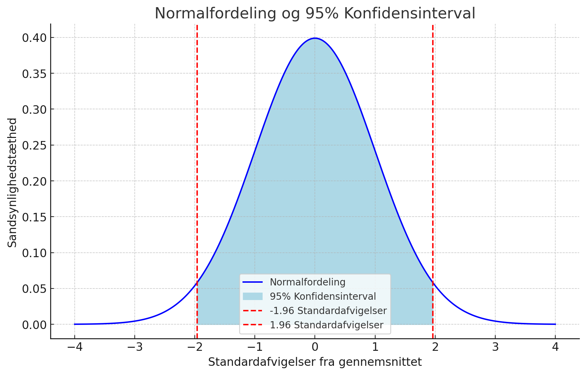

One Sample t-test
data: df$e5
t = 16.229, df = 607, p-value < 2.2e-16
alternative hypothesis: true mean is not equal to 35.5
95 percent confidence interval:
44.40842 46.86132
sample estimates:
mean of x
45.63487 Hypotesetest
Statistik E24 (15 ECTS)
ved Mikkeline Munk Nielsen
Hvad er hypotesetestning?
Hypotesetest er en statistisk procedure designet til at evaluere hypoteser/påstande om en populations egenskaber baseret på stikprøvedata
Eksempel på hypotese: der er forskel på gennemsnitslønnen for mænd og kvinder i Grønland
Formål: At træffe beslutninger om, hvorvidt der er tilstrækkeligt bevis for at afvise hypotesen med udgangspunkt i stikprøven
Konkret bruger vi dem til at vurdere, om forskelle og observationer vi ser i vores stikprøve er tilfælde pga. stikprøveusikkerhed, eller om det er sandsynligt, at de er udtryk for rigtige forskelle i populationen
Fremgangsmåde
I hypotesetests stiller man to hypoteser op og tester dem mod hinanden:
Nulhypotese (H0): En påstand om, at der ikke er nogen signifikant forskel eller virkning.
Alternativ hypotese (H1): En påstand om, at der er en signifikant forskel eller virkning.
Eksempel:
H0: Der er ikke nogenforskel i gennemsnitslønnen for mænd og kvinder
H1: Der er forskel i gennemsnitslønnen for mænd og kvinder
Fremgangsmåde
- Formulering af hypoteser: Formulering af nulhypotese og alternativ hypotese
- Valg af signifikansniveau: Fastlæggelse af den sandsynlighed vi har defineret i konfidensintervallet som den acceptable usikkerhed.
- Beregning af teststatistik: Anvendelse af passende statistisk test til at beregne teststatistikken baseret på stikprøvedataene.
- Afgørelse: Sammenligning af teststatistikken med en kritisk værdi eller p-værdi for at afgøre, om man skal afvise nulhypotesen.
Hvordan evalueres hypoteser?
Man evaluerer hypoteserne vil at udregne en test-statistik
En teststatistik er en beregning, der opsummerer informationen fra dine data for at vurdere, hvor meget de afviger fra det, vi forventer under nullhypotesen (H0​).
Test-statistikken er det tal, som vi bruger til at træffe en beslutning om, hvorvidt dataene understøtter H0​ eller H1​.
Udregning af test-statistikker
Beregningen følger altid en grundlæggende struktur:
\[ \text{Teststatistik} = \frac{\text{observeret forskel/fordeling} - \text{forventet forskel/fordeling under } H_0}{\text{standardfejl}} \]
Observeret forskel/fordeling: Hvad ser vi i data? For eksempel en forskel mellem to grupper eller en sammenhæng mellem to variabler
Forventet forskel/fordeling under (H0): Hvad forventer vi, hvis H0 er sand? Ofte er dette ingen forskel eller effekt (dvs. 0).
Standardfejl: Et mål for, hvor meget forskelle i data kan forventes at variere tilfældigt (som resultat af at have trukket en stikprøve)
Udregning af test-statistikker
For normalfordelte variable kan vi standardisere den observerede forskel til en z-score:
\[ z = \frac{\text{observeret forskel} - \text{forventet forskel under } H_0}{\text{standardfejl}} \]
Hvad fortæller z-scoren?
z-scoren viser, hvor mange standardafvigelser den observerede forskel er væk fra det forventede under (H0).
Jo højere (z)-score (positiv eller negativ), desto længere væk fra middelværdien ligger dataene.
For at evaluere resultatet af en test placeres teststatistikken på en teoretisk fordeling, der repræsenterer, hvordan teststatistikken ville fordele sig, hvis nulhypotesen (H0) er sand. Dette gør det muligt at vurdere, om den observerede teststatistik er ekstrem nok til at afvise H0.
Udregning af test-statistikker
Når vi beregner en z-score, placerer vi resultatet på standard-normalfordelingens x-akse:
\(z=0\): Data ligger præcis på middelværdien, som forventet under​.
\(z>0\): Data ligger over middelværdien.
\(z<0\): Data ligger under middelværdien.
Jo længere væk z-scoren er fra \(0\), desto mere ekstreme er dataene:
Fx: \(z=2\) betyder, at data ligger 2 standardafvigelser væk fra middelværdien.
Udregning af test-statistikker
Vi ved, at afstanden fra en observeret værdi til middelværdien i en normalfordeling fortæller os, hvor sandsynligt det er at observere en given værdi
Vi ved også fra standardnormalfordelingen, at der er 95 % sandsynlighed for at observere en værdi der ligger \(\pm 1,96\) standardafvigelser omkring stikprøvegennemsnittet.
Dermed kan vi på baggrund af afstanden fra en observeret værdi til gennemsnittet (under H0) udregne, hvor sansynligt det er at observere værdien
På samme måde kan vi i hypotesetests fastlægge en kritisk værdi, hvor sandsynligheden for at observere en værdi så ekstrem (eller mere ekstrem) er så lille, at vi ikke længere tror på, at det bare kan skyldes tilfældigheder.
Kritiske værdier i normalfordelingen
Evaluering af hypotesetest
Hvis vi får en test-statistik, der ligger over den kritiske værdi siger vi, at forskellen er statistisk signifikant! Dvs. den forskel vi har observeret i stikprøven er ekstrem nok til, at vi tror på, at den kan genfindes i populationen - den er ikke bare tilfældig!
Hvis teststatistikken overskrider den kritiske værdi, afvis \(H_0\)​
Hvis teststatistikken ligger inden for intervallet af \(\pm\) den kritiske værdi kan \(H_0\) ikke afvises
Fejltyper i hypotesetest
Når man tester statistiske hypoteser, kan man begå to typer af fejl:
- Type I: Fejlagtigt forkaste \(H_0\), når \(H_0\) faktisk er sand.
- Type II: Fejlagtigt acceptere \(H_0\), når \(H_1\) faktisk er sand.
Definitioner:
- \(P(\text{fejl af Type I}) = \alpha\): Sandsynligheden for at begå en type I-fejl (signifikansniveauet).
- \(P(\text{fejl af Type II}) = \beta\): Sandsynligheden for at begå en type II-fejl.
Bemærk: Lav \(\alpha\) reducerer risikoen for Type I-fejl, men kan øge risikoen for Type II-fejl
Nulhypotese og alternativ hypotese:
En mand stilles for en dommer, anklaget for noget kriminelt.
- \(H_0\): Manden er ikke skyldig.
- \(H_1\): Manden er skyldig.
Mulige fejltyper:
Type I: Manden er uskyldig, men dømmes skyldig (Sandsynlighed: \(p = \alpha\))
Type II: Manden er skyldig, men frikendes(Sandsynlighed: \(p = \beta\))
Bemærk:
\(\alpha\) er signifikansniveauet – altså den sandsynlighed, vi har defineret som den acceptable risiko for fejlagtigt at forkaste \(H_0\).
Statistisk signifikans
Signifikans er et vigtigt begreb i hypotesetests, og relaterer sig tilbage til statistisk usikkerhed.
Før en hypotesetest fastsættes det acceptable niveau af statistisk usikkerhed, nemlig sandsynligheden for at afvise nulhypotesen, hvis den er sand (type I fejl).
Man arbejder typisk med ùõº=0,05 dvs. 5 % sandsynlighed for at beg√• type I fejl
P-værdier og signifikans
I praksis bruges p-værdier til at vurdere på hypotesetests:
En \(p\)-værdi er sandsynligheden for at få en teststatistik, der er lige så ekstrem eller mere ekstrem end den observerede, givet at nulhypotesen H0 er sand.
Man sammenligner \(p\) -værdien med signifikansniveauet \(\alpha\) (fx \(0,05\)):
Hvis \(p < \alpha\), afvises H0 (statistisk signifikant).
Hvis \(p \geq \alpha\), kan H0 ikke afvises (ikke statistisk signifikant)
Hvis vores signifikansniveau er sat til \(5%\)% afviser vi nulhypotesen, hvis vores \(p<0,05\). Hvis \(p≥0,05\) kan vi ikke afvise nulhypotesen.
P-værdier og signifikans
Hvorfor bruger vi p-værdier i stedet for at sammenligne test-statistikker med kritiske værdier?
Universel anvendelse: \(p\)-værdier kan bruges på tværs af forskellige fordelinger ( \(t\)-, \(z\)-, \(\chi^2\), osv.), uden at man manuelt skal slå kritiske værdier op.
Grad af evidens: \(p\)-værdien giver en præcis sandsynlighed, ikke kun en ja/nej-konklusion som ved kritiske værdier.
Tydelig sammenligning: Let at sammenligne testresultater, uanset hvilken test eller fordeling der bruges.
Tests og fordelinger
Forskellige statistiske fordelinger bruges i hypotesetestning afhængigt af datatypen, stikprøvens størrelse og kendskab til populationens egenskaber:
Normalfordeling (z-test): Bruges til intervalskalerede variable, når stikprøven er stor (\(n>30\)) og populationens standardafvigelse er kendt (\(\sigma\))
t-fordeling (t-test): Bruges til intervalskalerede variable ved små stikprøver eller ukendt standardafvigelse
Chi-i-anden-fordeling: Bruges ved kategoriske data (nominal og ordinal)
I praksis bruges t-testen for intervalskalerede variable, da vi sjældent kender \(\sigma\) og bruger stikprøvens standardafvigelse \(s\) som estimat for \(\sigma\). T-fordelingen nærmer sig alligevel normalfordelingen som stikprøven øges.
Hypotese-test i univariat analyse
I skal kende til to hypotesetests for univariat analyse (én variabel):
- T-test (intervalskala variable): Tester, om et gennemsnit er forskelligt fra en specifik værdi, vi kender på forhånd.
- \(\chi^2\)-test (nominal/ordinal): Bruges til at teste, om der er forskel på fordelingen af en nominal variabel i forhold til en forventet fordeling.
T-test for univariat analyse
I univariat analyse kan man anvende t-testen til formelt at teste, om gennemsnittet i en stikprøve er signifikant forskelligt fra en specifik værdi (f.eks. hvis du har viden om populationens sande gennemsnit):
Hypoteser:
- \(H_0\): Stikprøvegennemsnittet er lig populationens gennemsnit, \(\bar{x} = \mu_0\)
- \(H_1\): Stikprøvegennemsnittet er forskelligt fra populationens gennemsnit, \(\bar{x} \neq \mu_0\)
T-test for univariat analyse
Test-statistik:
\[ t = \frac{\bar{x} - \mu_0}{s / \sqrt{n}} \]
Hvor:
- \(t\): Test-statistikken
- \(\bar{x}\): Stikprøvegennemsnittet
- \(\mu_0\): Populationens gennemsnit (hvis kendt)
- \(s\): Standardafvigelsen i stikprøven
- \(n\): Antal observationer i stikprøven
T-test for univariat analyse
Teststatistikken \(t\) angiver, hvor meget stikprøvens gennemsnit afviger fra “den sande værdi” (populationens gennemsnit), udtrykt i forhold til usikkerheden på gennemsnittet.
Teststatistikken beregnes som: \[ t = \frac{\bar{x} - \mu_0}{s / \sqrt{n}} \]
Teststatistikken sammenlignes med en “kritisk værdi,” som fastlægges ud fra signifikansniveauet, man vælger.
Den t-fordeling, som bruges til t-test, nærmer sig normalfordelingen, når \(n > 30\). Derfor kan vi bruge vores viden om normalfordelingen til at udtale os om usikkerheden ved stikprøvegennemsnittet ift. populationsgennemsnittet.
Kritiske værdier for t-fordelingen
| Frihedsgrader (\(df\)) | \(\alpha = 0.10\) | \(\alpha = 0.05\) | \(\alpha = 0.01\) |
|---|---|---|---|
| 1 | 12,706 | 6,314 | 63,657 |
| 5 | 2,571 | 2,015 | 4,032 |
| 10 | 1,812 | 1,812 | 3,169 |
| 20 | 1,725 | 2,086 | 2,845 |
| 30 | 1,697 | 2,042 | 2,750 |
| \(\infty\) (stor \(n\)) | 1,645 | 1,960 | 2,576 |
(Frihedsgrader: antal observationer - 1 for én stikprøve)
T-test for univariat analyse
- Med et signifikansniveau på 5% vil den kritiske værdi i en t-fordeling være \(±1,96\), fordi der er 95% sandsynlighed for at få en værdi, der ligger mellem \(-1,96\) og \(+1,96\) standardafvigelser fra gennemsnittet i en standardnormalfordeling
- Hvis t-statistikken ligger udenfor \(±1,96\) afvises\(H_0\) og man konkluderer, at stikprøvegennemsnittet er signifikant anderledes fra populationsgennemsnittet. Sandsynligheden for at observere en værdi (stikprøvegennemsnit) der er så langt fra populationsgennemsnittet er nemlig kun 5 %, hvis nulhypotesen er sand.
- Hvis t-statistikken ligger indenfor \(-1,96\) og \(+1,96\) kan vi ikke afvise\(H_0\), da der ikke er tilstrækkelig evidens til at afvise nulhypotesen. Forskellen mellem populations- og stikprøvegennemsnit kan ligeså godt skyldes tilfældighed, da vi trak stikprøven.
T-test for univariat analyse
Alternativt kan vi bruge p-værdien til at konkludere på testen…
\(p\)-værdien angiver sandsynligheden for, at et nyt forsøg vil give en teststatistik, som er lige så usandsynlig (eller mere), under den antagelse, at nulhypotesen er sand.
Hvis vores signifikansniveau er sat til 5%, afviser vi nulhypotesen, hvis \(p < 0,05\).
Hvis \(p \geq 0,05\), kan vi ikke afvise nulhypotesen. Dvs. vi ikke kan udelukke, at stikprøvegennemsnittet er det samme som populationsgennemsnittet.
Eksempel: Grønlandske perspektiver
Grønlandske perspektiver survey (Ilisimatusarfik)
Foretaget i 13 grønlandske byer og bygder i alle Grønlands regioner i løbet af sommeren 2018
Befolkning og politiske holdninger
Eksempel: T-test for univariat analyse
I R er t-testen utrolig nem med funktionen t.test() . Lad os prøve at teste, om gennemsnitsalderen for folk, der har besvaret GL-perspektiver surveyen er signifikant anderledes en tallet fra Grønlands statistik på 35,5 år:
H0: gennemsnitsalderen i surveyen er lige gennemsnitsalderen fra GL statistik \(\bar{x}=\mu\)
H1: gennemsnitsalderen i surveyen er signifikant anderledes end gennemsnitsalderen fra GL statistik \(\bar{x}\ne\mu\)
Eksempel: T-test for univariat analyse
Man indsætter variabel (her
e5, fra datasættetdf) som stikprøvegennemsnittet \(\bar{x}\) regnes på og den forventede værdi \(\mu\), som man gerne vil teste det pågældende gennemsnit op imod (ellers testes gennemsnittet mod \(\mu=0\)).Her ønsker vi at teste mod aldersgennemsnittet fra populationen \(\mu=35,5\):
Eksempel: T-test for univariat analyse
Resultaterne fra testen kan samles pænere i en tabel:
Parameter Værdi
1 Gennemsnit 45.635
2 Teststatistik 16.229
3 P-værdi 0.000
4 Nedre konfidensgrænse 44.408
5 Øvre konfidensgrænse 46.861
6 Frihedsgrader 607Eftersom p-værdien=0,000 (og altså mindre end 0,05) afviser vi nulhypotesen og konkluderer, at gennemsnitsalderen i denne stikprøve er signifikant anderledes end den i populationen.
Der er mindre end 0,000 % sandsynlighed for at observere dette stikprøvegennemsnit (eller et mere ekstremt), hvis nulhypotesen er sand.
# Kør t-testen
test_result <- t.test(df$e5, mu = 35.5)
# Opret en data frame med de ønskede metrics i rækker
(result_df <- data.frame(
Parameter = c("Gennemsnit", # Gennemsnittet af prøven
"Teststatistik", # Teststatistikken (t-værdien)
"P-værdi", # P-værdien med 4 decimaler
"Nedre konfidensgrænse", # Nedre grænse for konfidensintervallet
"Øvre konfidensgrænse", # Øvre grænse for konfidensintervallet
"Frihedsgrader"), # Frihedsgrader (df)
Værdi = c(
round(test_result$estimate, 3), # Gennemsnittet afrundet til 3 decimaler
round(test_result$statistic, 3), # Teststatistikken afrundet til 3 decimaler
sprintf("%.3f", test_result$p.value), # P-værdi med 4 decimaler uden eksponentiel notation
round(test_result$conf.int[1], 3), # Nedre grænse afrundet til 3 decimaler
round(test_result$conf.int[2], 3), # Øvre grænse afrundet til 3 decimaler
round(test_result$parameter, 1) # Frihedsgrader afrundet til 1 decimal
)
))Chi i anden test (\(\chi^2\)) for nominal- og ordinal-skalerede variable
- Ordinal og nominalskalerede variable har ikke gennemsnit og varians uafhængigt af vores nummerering og derfor er disse meningsløse. T-testen er derfor også meningsløs.
- I stedet tester vi, om fordelingen mellem variablens kategorier er forskellig fra en forventet fordeling.
Goodness of fit
- Testen hedder χ² – udtales ‘Chi i anden’ eller goodness of fit.
- I χ²-test for univariat hypotesetest kan vi teste ‘goodness of fit’, altså hvor tæt den observerede fordeling er på en forventet fordeling.
Chi i anden test (\(\chi^2\)) for nominal- og ordinal-skalerede variable
- χ² fordeling opstår, når vi antager, at en tilfældig variabel, der har k observationer – kaldet frihedsgrader – fordeler sig over et sæt af mulige udfald.
- Hvis testen er insignifikant, er fordelingen ikke med sikkerhed forskellig fra den forventede fordeling.
- Hvis testen er signifikant, er fordelingen signifikant anderledes end den forventede fordeling.
Chi i anden test (\(\chi^2\)) for nominal- og ordinal-skalerede variable
Hypoteser i univariat \(\chi^2\) test (goodness of fit):
H0: Den observerede fordeling er ikke signifikant forskellig fra den forventede fordeling
H1: Den observerede fordeling er signifikant forskellig fra den forventede fordeling.Den observerede fordeling er signifikant forskellig fra den forventede fordeling.
Chi i anden test (\(\chi^2\)) for nominal- og ordinal-skalerede variable
Vi kan udregne test-statistikken og sammenligne den med den kritiske værdi i en χ-fordeling, denne fordeling er nemlig anderledes end normalfordelingen…
… Men vi kan også bare bruge p-værdien, som er sammenlignelig på tværs af alle tests. Nemt!
Eksempel: \(\chi^2-test\) for univariat analyse
Variablen e5 måler om respondenterne identificerer sig som værende grønlandsk, dansk, både grønlandsk og dansk, eller andet:
df$e4 n percent
Andet 10 0.01567398
Både Grønlandsk og Dansk 61 0.09561129
Dansk 29 0.04545455
Grønlandsk 538 0.84326019Vi kan bruge \(\chi^2\) goodness of fit testen til at teste, om fordelingen på variablen i stikprøven stemmer overens med en forventet fordeling.
Eksempel: \(\chi^2-test\) for univariat analyse
De observerede værdier er antallet i hver kategori \((n)\), og den forventede fordeling er en sandsynlighedsfordeling \((p)\).
- De observerede værdier fra tabellen er:
- Antag en forventet fordeling som andele (5% andet, 10% grønlandsk og dansk, 5% dansk, 80% grønlandsk):
Eksempel: \(\chi^2-test\) for univariat analyse
Brug funktionen chisq.test() for at sammenligne de observerede værdier med de forventede:
Eksempel: \(\chi^2-test\) for univariat analyse
Resultaterne kan samles pænt i en tabel og eksporteres:
Parameter Værdi
X-squared Chi-squared 16.914000
df Degrees of Freedom 3.000000
p-value 0.000736Da p-værdien er under 0,05 kan vi forkaste nulhypotesen. Fordelingen af, hvad folk identificerer sig som er anderledes i stikprøven end i den forventede fordeling.
# Saml resultaterne i en tabel
chi_table <- data.frame(
Parameter = c("Chi-squared", "Degrees of Freedom", "p-value"),
Værdi = c(round(chi_test$statistic, 3), # Chi-squared værdi
chi_test$parameter, # Frihedsgrader
signif(chi_test$p.value, 3)) # p-værdi (signifikant til 3 decimaler)
)
library(writexl)
write_xlsx(list("Chi test" = chi_table), "Chi_tabel.xlsx")Øvelse
Åben firmadatasættet og prøv at estimer følgende:
Konfidensintervaller (95%) for variablen omsætning
En t-test der tester, om det gennemsnitlige antal ansatte er signifikant forskellig fra 400
En chi-anden test (goodness of fit) der tester, om fordelingen på variablen indutri i datasættet er signifikant forskelligt fra en fordeling, som du selv ville forvente (definér selv)
Husk at opstille hypoteser undervejs!